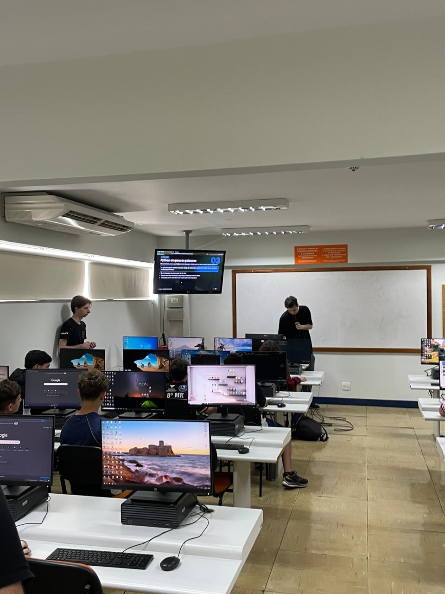

Relatório – 24ª Aula
Data: 21/09/2026
Turma: 8º e 9º ano
Instrutor:Fatobene
Relatório – Phyton
Na aula de hoje demos continuidade no aprendizado de Python com os alunos do Londrinense. o instrutor Fatobene começou a aula revisando os conceitos aprendidos na aula anterior, reforçando a importância de entender a sintaxe e a lógica da linguagem. Em seguida, realizamos exercícios práticos, onde os alunos aplicaram os conceitos passados nas ultimas aulas, visto que na aula anterior eles não tiveram a oportunidade de praticar. Durante os exercícios, auxiliei os alunos das ultimas fileiras. No inicio, alguns alunos tiveram dificuldades em lembrar toda a sintaxe, mas era esperado, pois foi a primeira vez que eles estavam escrevendo códigos em Python. No geral a aula foi bem produtiva e os alunos demonstraram interesse em entender como fazer o código funcionar corretamente.
